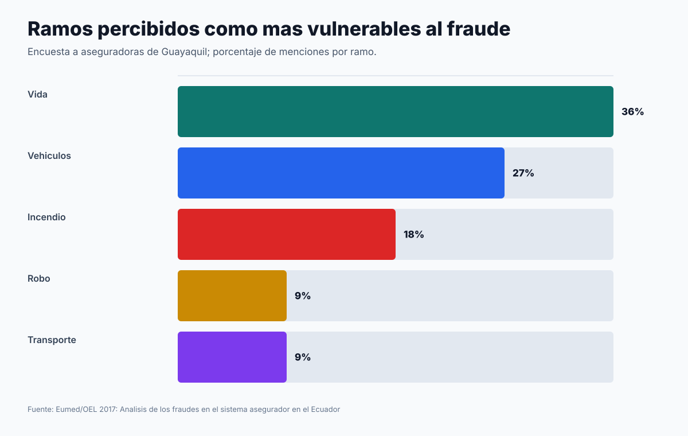
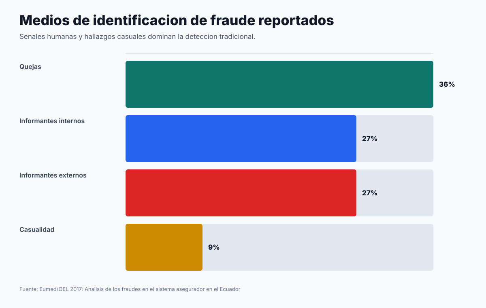
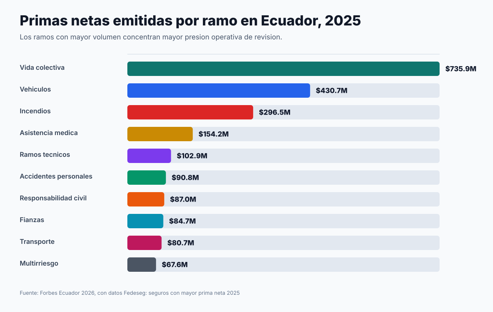
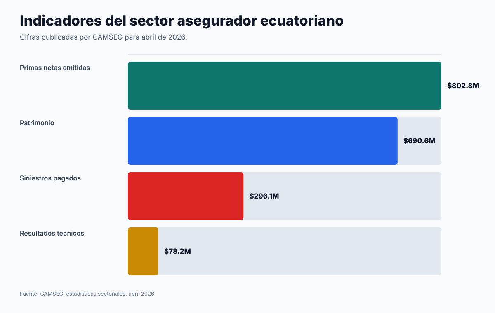
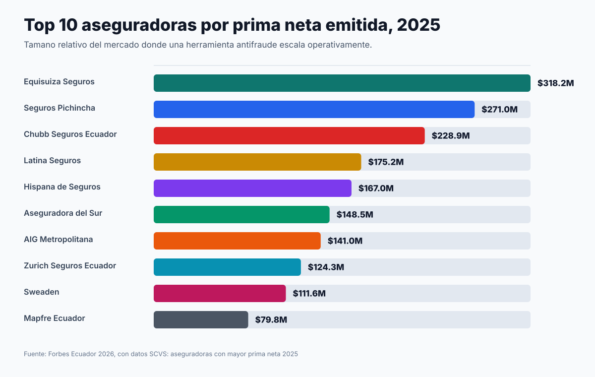
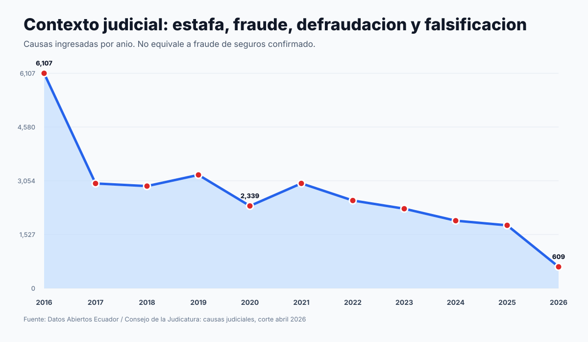
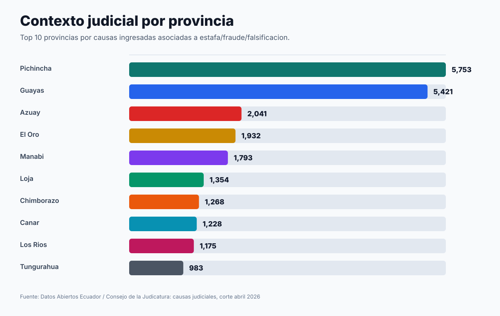

Graficos de contexto para FraudIA Claims
Usar como apoyo visual. Las cifras judiciales son contexto de estafa/fraude/falsificacion, no fraude de seguros confirmado.
01 Ramos Vulnerables Fraude Ecuador

02 Medios Deteccion Fraude Ecuador

03 Primas Por Ramo 2025 Ecuador

04 Indicadores Sector Abril 2026

05 Top Aseguradoras 2025 Ecuador

06 Causas Judiciales Contexto Anual

07 Causas Judiciales Contexto Provincia
